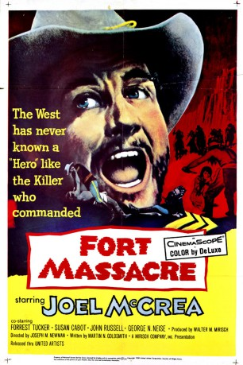

#7330 Die Letzten der 2. Schwadron
Alternativ: Fort Massacre
 
 IMDB-Wertung: 6.2 / 10
IMDB-Wertung: 6.2 / 10  Metascore: 0
Metascore: 0 
1879: Der skrupellose Sergeant Vinson, der durch die Ermordung seiner Familie zum Indianerhasser geworden ist, führt eine stark dezimierte Kavallerie durch New Mexiko. Statt seine Leute auf dem direkten Weg zum rettenden Fort zurückzubringen, nimmt er gefährliche Umwege in Kauf, um immer wieder Blutbäder unter den Indianern anrichten zu können. Als er dafür bedenkenlos das Leben seiner Soldaten aufs Spiel setzt, wendet sich sein treuester Gefährte gegen ihn...
Jahr: 1958
Dauer: 80 Minuten
FSK: 12
Land: USA Studio: United ArtistsTonspuren: DD2.0 - ,
Untertitel:
Auflösung: 1080p (1920x824) Größe: 5591 MB
Genre: Western
Regisseur: Joseph M. Newman
Drehbuch: Martin Goldsmith
Soundtrack:
Darsteller:
- Joel McCrea als Sgt. Vinson
 Forrest Tucker als McGurney
Forrest Tucker als McGurney John Russell als Pvt. Robert W. Travis
John Russell als Pvt. Robert W. Travis- Susan Cabot als Piute Girl
- George N. Neise als Pendleton
- Anthony Caruso als Pawnee
 Robert Osterloh als Schwabacker
Robert Osterloh als Schwabacker Denver Pyle als Collins
Denver Pyle als Collins Francis McDonald als Piute Man
Francis McDonald als Piute Man Irving Bacon als Charlie
Irving Bacon als Charlie- Claire Carleton als Adele
- Larry Chance als Moving Cloud
- Bernie Gozier als Apache Indian , uncredited
- Guy Prescott als Tucker
- Rayford Barnes als Moss
- John Fritz als Apache Indian , uncredited
- Walter Kray als Chief , uncredited
- Ben Rombouts als Apache Indian , uncredited
Datei: X:\HD-Western-1900-1959\Letzten der 2. Schwadron, Die (1958, FSK12, 1920x824).mkv seit 16.10.2017
Festplatte: HD Eastern+Western
 Es gibt insgesamt 98 Filme in der Gruppe 'HD-Western-1900-1959'
Es gibt insgesamt 98 Filme in der Gruppe 'HD-Western-1900-1959'